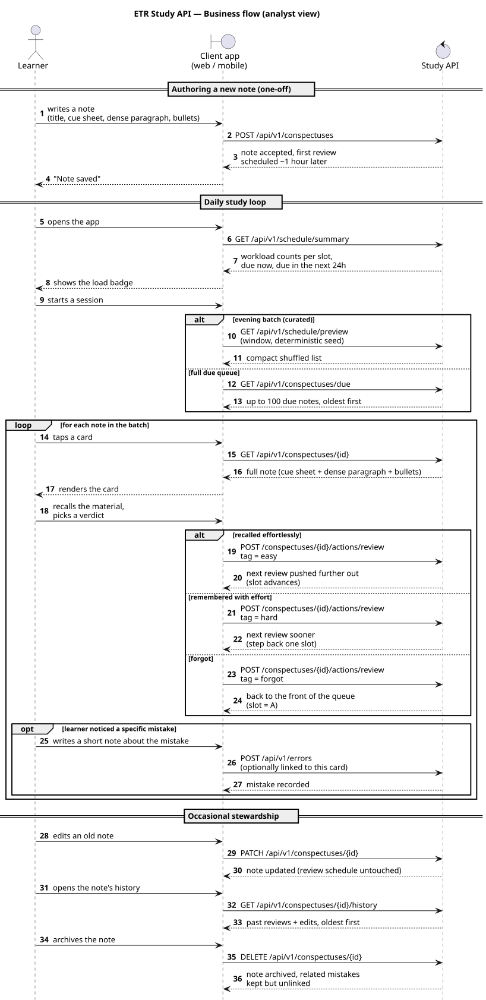
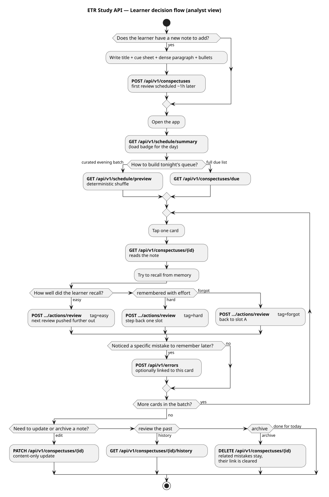

HTTP API reference (internal)
Engineering-facing HTTP API: per-resource hubs and per-operation specs. The internal pages are the source of truth for requirements; the public OpenAPI contract is the output artefact authored from these decisions.
Documentation layers — read this first
This space is the source of truth for requirements. Pages under internal/services/api/reference/ are written by the systems analyst for the developer: what to build, what business rules apply, what to validate, what to log, what to test, and what must end up in the public OpenAPI contract.
services/portal/public/reference/api/— external contract. OpenAPI 3.x + Swagger UI. Audience: integrators (external partners, mobile apps, third-party clients). Authored by developers after implementing the spec on this side.internal/services/api/reference/— internal technical specification. Audience: developers and QA inside the team. Holds business context, acceptance criteria, functional and non-functional requirements, validation rules, state transitions, side effects, observability requirements, test plan, and OpenAPI authoring hints.
Per-operation pages follow the template at api-spec template. Cross-cutting concerns (idempotency, error envelope, auth, pagination, versioning, observability conventions, OpenAPI authoring guide) live once under _shared/ and are linked from each operation — never duplicated.
Resources
Each resource has a hub page with business context, domain model, lifecycle, an operations table (status pills + idempotency + spec links) and a Cross-cutting concerns section pointing at _shared/. Per-method pages live under {resource}/operations/.
| Resource | Mount | Hub | Status |
|---|---|---|---|
| User | /api/v1/user |
User resource | Implemented 4 ops live |
| Conspectus | /api/v1/conspectuses |
Conspectus resource | Draft 8 specs awaiting impl |
| Error log | /api/v1/errors |
Error log resource | Draft 2 specs awaiting impl (append-only) |
| Schedule | /api/v1/schedule |
Schedule resource | Draft 2 specs awaiting impl (read-only projections) |
Business flow — what the learner actually does
Two views of the same story: a plain-language map for product / business folks, and a UML sequence for analysts who need the wire-level order of calls. Neither view is about migrations or database internals — those live in per-operation specs.
- GET /schedule/summary
- GET /schedule/preview
- GET /conspectuses/due
- GET /conspectuses/{id}
- POST /conspectuses/{id}/actions/review
- slot advances
- next review later
- slot steps back
- next review soon
- POST /api/v1/errors
- PATCH /conspectuses/{id}
- GET /conspectuses/{id}/history
- DELETE /conspectuses/{id}
Analyst view — UML sequence
Same business flow, translated into a UML sequence diagram. The audience here is the systems analyst who needs to see the call order, request/response shape, and where the branches sit. No table schemas, no migration steps — that's what the per-operation specs are for.

services/portal/internal/reference/uml/api_usage_lifecycle_sequence.puml · regenerate with make docs-fix.Analyst view — decision flow
A UML activity diagram of the same journey — helpful for training material and for onboarding docs where the analyst walks the learner through decision branches (easy / hard / forgot, log a mistake or not, edit a note or not).

services/portal/internal/reference/uml/api_usage_lifecycle_flow.puml.Shared (cross-cutting concerns)
The _shared/ folder is the single source of truth for rules that span every operation. Per-operation specs link to anchors here instead of duplicating text — when the rule changes, one page changes.
- Specification template — golden skeleton for new operation pages.
- Definition of Done — artefact-agnostic; spec DoD is one of the four families (API spec / ADR / runbook / postmortem).
- Idempotency —
Idempotency-Keyheader, replay rules, behaviour matrix. - Error envelope + error catalog — envelope shape and global registry of every
code/key. - Authentication & authorization — API key, ownership, why we collapse cross-tenant to 404.
- Pagination — bounded list default, cursor on demand.
- Versioning — URL-based, breaking-vs-additive matrix.
- Observability conventions — log events, metrics, traces, alerts naming.
- Field conventions — naming, types, timezones, PII classification.
- OpenAPI authoring guide — translating internal spec into the public contract.
Quality gates
scripts/spec_lint.py— structural lint per operation page (required sections, mount points, examples, page history).scripts/spec_consistency.py— cross-document checks:operationId↔ spec page; errorcode/key↔ shared catalog.make docs-spec-check— runs both; wired intomake docs-checkand CI.
External contract (separate audience)
Paths, schemas, and declared errors: services/portal/public/reference/api/openapi.json (dev-generated runtime spec) rendered through the public-portal Scalar explorer. The analyst-authored canon lives under internal/services/api/openapi/etr_study_app/fragments/ and drives the parity gate — see ADR 0036 and ADR 0026.